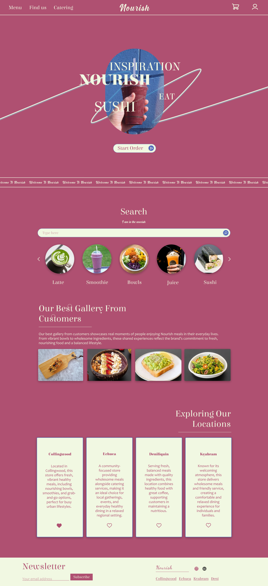
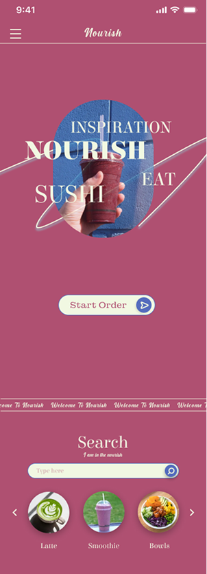
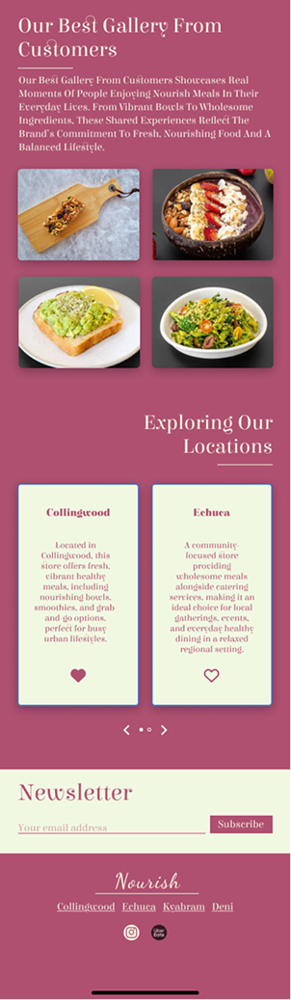
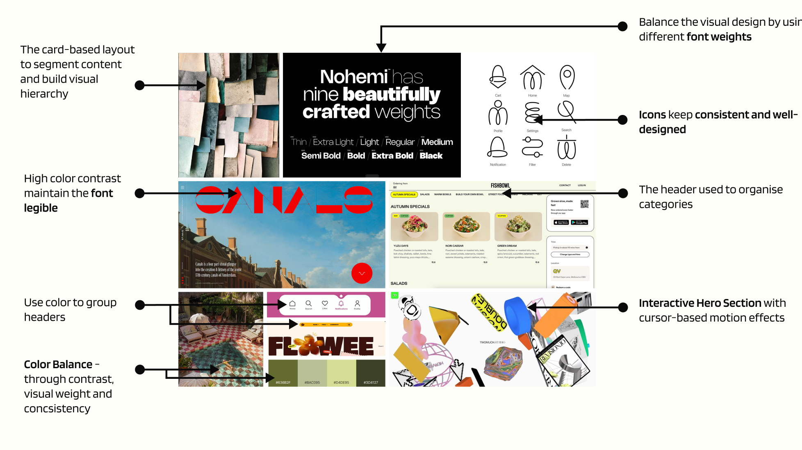
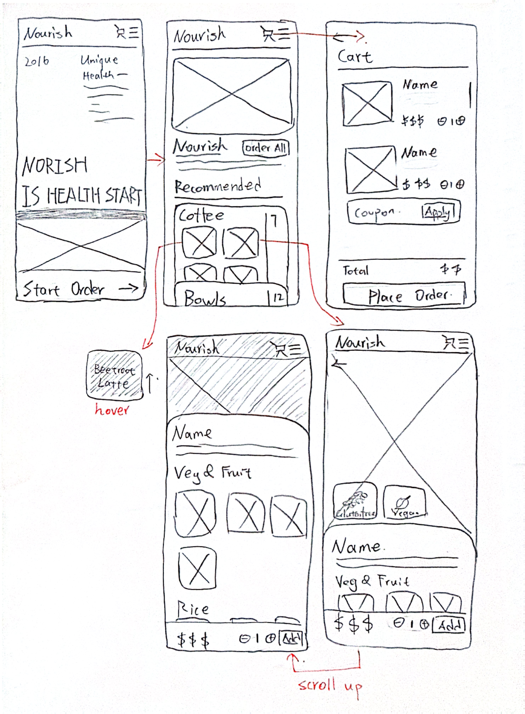
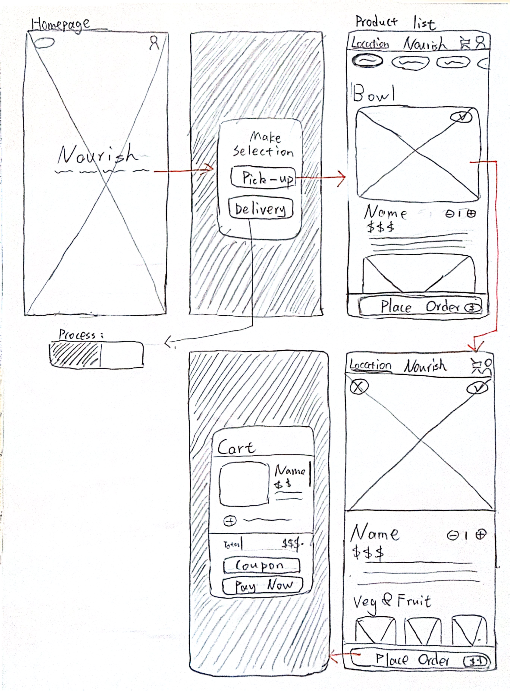
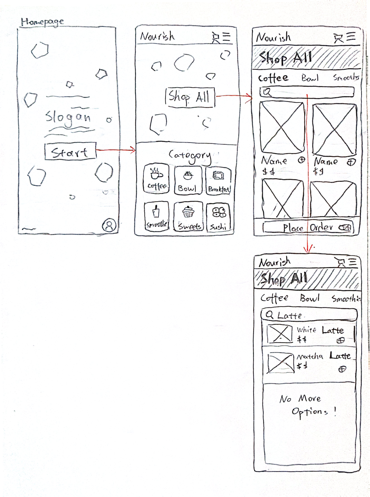
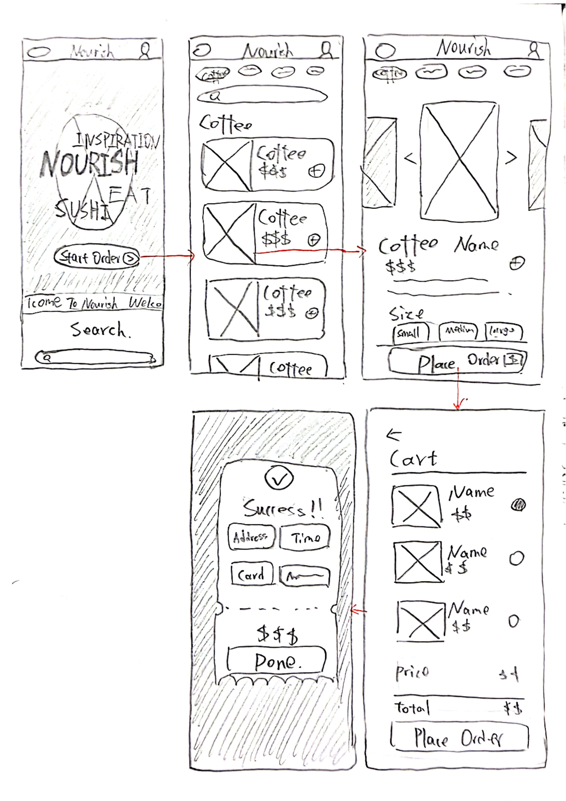

Nourish - Website Redesign
This redesign aims to improve the Nourish website by addressing the usability issues identified in the UI Analysis Report, while maintaining its luxurious and minimalist brand identity.
Key Improvements
- Navigation: Introduce a fixed header for easier navigation.
- Visual Hierarchy: Establish a consistent typography and colour system.
- Website Architecture: Improve the content structure and interaction flow, making key features easier to find.
Redesigned Wireframe
Homepage

Intro Animation
Making the transition more smoother.
Responsive Design
More images shows in desktop


Crawling text
It is not overly obvious, keeping the button remains visually prominent
Product List


Fixed Header
Text Hierarchy
Search word highlights in bold
Icon
Using icon to indicate vegan option
Hover Animation
Hover button will add border. Click button will change.


Product Detail

Click Feedback
Making the selection adds a border.
Desktop Adaption
Move the horizontally scrolling images to the bottom, and add a border to the images on the desktop version to indicate the user’s current status.

Check out page


Desktop Adaption
Collapse some sections
Selection Button
Users can filter products within the cart
Desktop Text Adaption
Maintain a clear typographic hierarchy
Mobile
H1-32px
H2-28px
H3-20px
Body-14px
Caption-12px
Desktop
H1-48px
H2-32px
H3-28px
Body-20px
Caption-14px
Color Platte
Adjusting the shades of the branding color helps maintain visual consistency while ensuring readability.


Confirmation Payment

Status Color
Highlight the success status
Receipt Design
Skeuomorphic design enhances user immersion.

Inspiration

Color Balance - through contrast, visual weight and consistency. Color Balance - through contrast, visual weight and consistency.
Ideation



